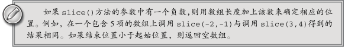

concat()方法
ECMAScript 为操作已经包含在数组中的项提供了很多方法。其中， concat() 方法可以基于当前数
组中的所有项创建一个新数组。具体来说，这个方法会先创建当前数组一个副本，然后将接收到的参数
添加到这个副本的末尾，最后返回新构建的数组。在没有给 concat() 方法传递参数的情况下，它只是
复制当前数组并返回副本。如果传递给 concat() 方法的是一或多个数组，则该方法会将这些数组中的
每一项都添加到结果数组中。如果传递的值不是数组，这些值就会被简单地添加到结果数组的末尾。下
面来看一个例子。
var colors = ["red", "green", "blue"];
var colors2 = colors.concat("yellow", ["black", "brown"]);
alert(colors); //red,green,blue
alert(colors2); //red,green,blue,yellow,black,brown
以上代码开始定义了一个包含 3 个值的数组 colors 。然后，基于 colors 调用了 concat() 方法，
并传入字符串 "yellow" 和一个包含 "black" 和 "brown" 的数组。最终，结果数组 colors2 中包含了
"red" 、 "green" 、 "blue" 、 "yellow" 、 "black" 和 "brown" 。至于原来的数组 colors ，其值仍然
保持不变。
slice()方法
它能够基于当前数组中的一或多个项创建一个新数组。 slice() 方法可以
接受一或两个参数，即要返回项的起始和结束位置。在只有一个参数的情况下， slice() 方法返回从该
参数指定位置开始到当前数组末尾的所有项。如果有两个参数，该方法返回起始和结束位置之间的项—
—但不包括结束位置的项。注意， slice() 方法不会影响原始数组。请看下面的例子。
var colors = ["red", "green", "blue", "yellow", "purple"];
var colors2 = colors.slice(1);
var colors3 = colors.slice(1,4);
alert(colors2); //green,blue,yellow,purple
alert(colors3); //green,blue,yellow
在这个例子中，开始定义的数组 colors 包含 5 项。调用 slice() 并传入 1 会得到一个包含 4 项的
新数组；因为是从位置 1 开始复制，所以会包含 "green" 而不会包含 "red" 。这个新数组 colors2 中
包含的是 "green" 、 "blue" 、 "yellow" 和 "purple" 。接着，我们再次调用 slice() 并传入了 1 和 4，
表示复制从位置 1 开始，到位置 3 结束。结果数组 colors3 中包含了 "green" 、 "blue" 和 "yellow" 。

下面我们来介绍 splice() 方法，这个方法恐怕要算是最强大的数组方法了，它有很多种用法。
splice() 的主要用途是向数组的中部插入项，但使用这种方法的方式则有如下 3 种。
删除：可以删除任意数量的项，只需指定 2 个参数：要删除的第一项的位置和要删除的项数。
例如， splice(0,2) 会删除数组中的前两项。
插入：可以向指定位置插入任意数量的项，只需提供 3 个参数：起始位置、0（要删除的项数）
和要插入的项。如果要插入多个项，可以再传入第四、第五，以至任意多个项。例如，
splice(2,0,"red","green") 会从当前数组的位置 2 开始插入字符串 "red" 和 "green" 。
替换：可以向指定位置插入任意数量的项，且同时删除任意数量的项，只需指定 3 个参数：起
始位置、要删除的项数和要插入的任意数量的项。插入的项数不必与删除的项数相等。例如，
splice (2,1,"red","green") 会删除当前数组位置 2 的项，然后再从位置 2 开始插入字符串
"red" 和 "green" 。
splice() 方法始终都会返回一个数组，该数组中包含从原始数组中删除的项（如果没有删除任何
项，则返回一个空数组）。下面的代码展示了上述 3 种使用 splice() 方法的方式。
var colors = ["red", "green", "blue"];
var removed = colors.splice(0,1); // 删除第一项
alert(colors); // green,blue
alert(removed); // red，返回的数组中只包含一项
removed = colors.splice(1, 0, "yellow", "orange"); // 从位置 1 开始插入两项
alert(colors); // green,yellow,orange,blue
alert(removed); // 返回的是一个空数组
removed = colors.splice(1, 1, "red", "purple"); // 插入两项，删除一项
alert(colors); // green,red,purple,orange,blue
alert(removed); // yellow，返回的数组中只包含一项
上面的例子首先定义了一个包含 3项的数组 colors 。第一次调用 splice() 方法只是删除了这个数组的
第一项，之后 colors 还包含 "green" 和 "blue" 两项。第二次调用 splice() 方法时在位置 1插入了两项，
结果 colors 中包含 "green" 、 "yellow" 、 "orange" 和 "blue" 。这一次操作没有删除项，因此返回了一个
空数组。最后一次调用 splice() 方法删除了位置 1处的一项，然后又插入了 "red" 和 "purple" 。在完成以
上操作之后，数组 colors 中包含的是 "green" 、 "red" 、 "purple" 、 "orange" 和 "blue" 。